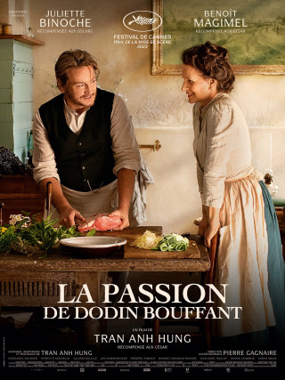

La Passion de Dodin Bouffant
Eugénie, cuisinière hors pair, est depuis 20 ans au service du célèbre gastronome Dodin. A force de passer du temps ensemble en cuisine, une passion amoureuse s’est construite entre eux où l’amour est étroitement lié à la pratique de la gastronomie. De cette union naissent des plats tous plus savoureux et délicats les uns que les autres qui vont jusqu’à émerveiller les plus grands de ce monde. Pourtant, Eugénie, avide de liberté, n’a jamais voulu se marier avec Dodin. Ce dernier décide alors de faire quelque chose qu’il n’a encore jamais fait : cuisiner pour elle.
Genre : Romance, Drame, Histoire, Biographie
Durée : 2h25min
Réalisation : Tran Anh Hung
Acteurs : Juliette Binoche, Benoît Magimel, Patrick d'Assumçao, Emmanuel Salinger, Jan Hammenecker
Réservation